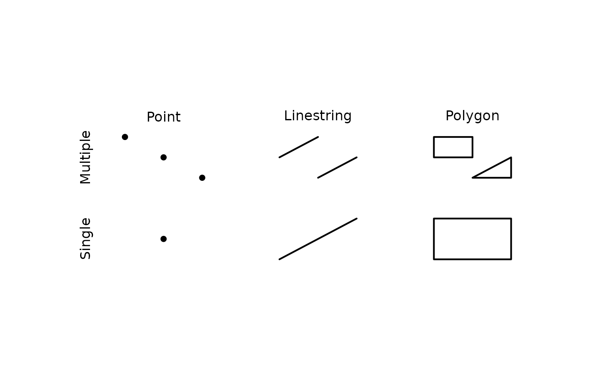
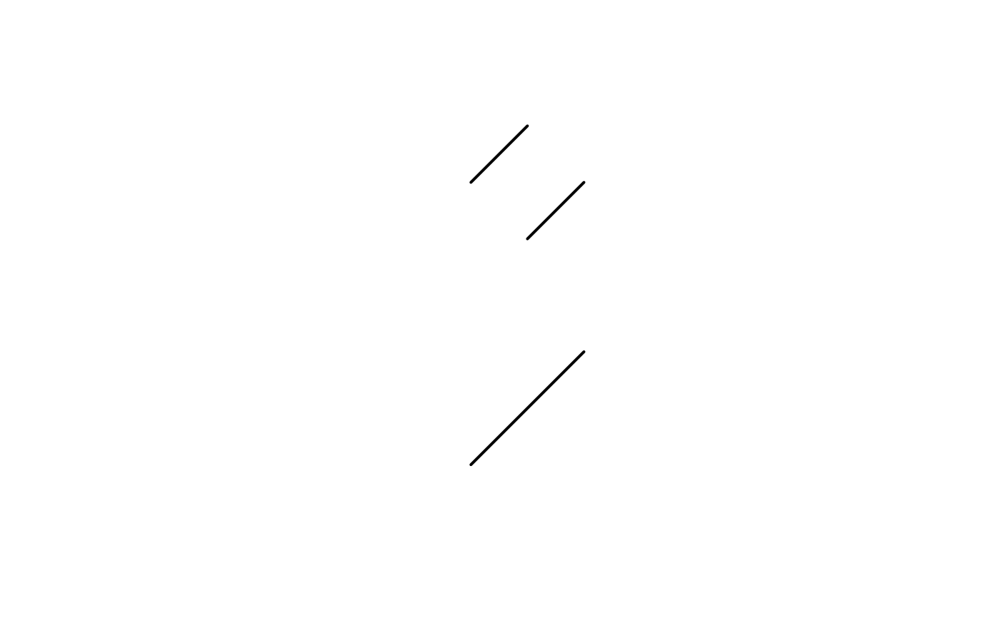
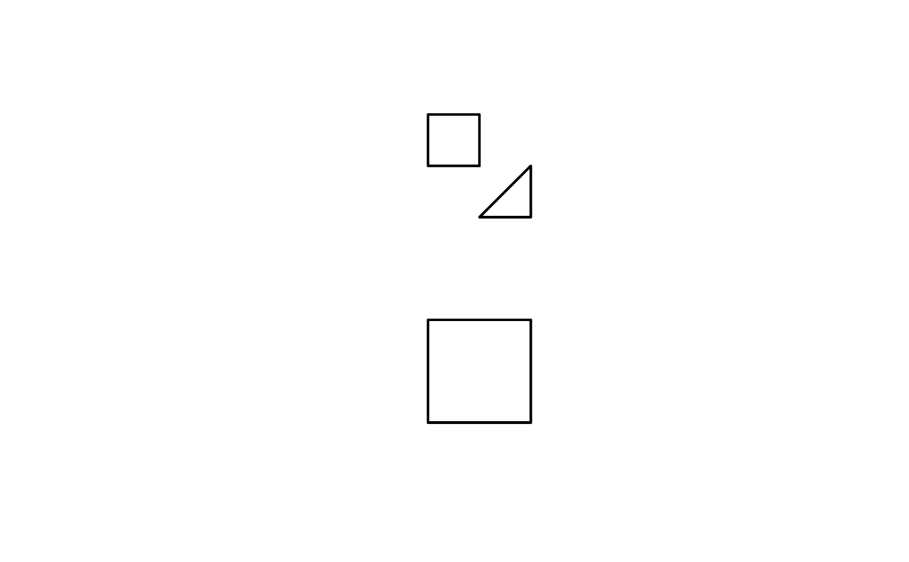

This function filters a given geometries by specific type and casts it to the specified type.
Usage
filter_and_cast_geometries(
geometries,
geometry_type = c("POINT", "LINESTRING", "POLYGON")
)
get_points(geometries)
get_linestrings(geometries)
get_polygons(geometries)Examples
plot(1, type = "n", xlab = "", ylab = "", axes = FALSE, xlim = c(0, 12), ylim = c(0, 10))
text(0, c(2, 6), c("Single", "Multiple"), srt = 90, cex = 1)
text(c(2, 6, 10), 8, c("Point", "Linestring", "Polygon"), cex = 1)
geometries <- sf::st_sf(geometry = c(
# POINT
create_points(2, 2),
# LINESTRING
create_linestring(5, 1, 7, 3),
# POLYGON
create_polygon(9, 1, 9, 3, 11, 3, 11, 1),
# MULTIPOINT
sf::st_union(create_points(1, 7, 2, 6, 3, 5)),
# MULTILINESTRING
sf::st_union(
create_linestring(5, 6, 6, 7),
create_linestring(6, 5, 7, 6)
),
# MULTIPOLYGON
sf::st_union(
create_polygon(9, 7, 10, 7, 10, 6, 9, 6),
create_polygon(10, 5, 11, 6, 11, 5)
)
))
plot(geometries, pch = 16, lwd = 2, add = TRUE)

# Get points from geometries
plot(get_points(geometries), pch = 16)
# Get linestrings from geometries
plot(get_linestrings(geometries), lwd = 2)

# Get polygons from geometries
plot(get_polygons(geometries), lwd = 2)
